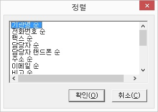

마지막 레코드 다음에 새로운 레코드를 추가합니다.
이 기능을 실행하면 데이터 편집 작업으로 전환되어 추가된 레코드에 데이터를 바로 입력할 수 있습니다. 데이터 입력이 끝난 후에는 반드시 <Ctrl-F4> 키를 눌러 입력 종료를 해
주어야 합니다.
현재 레코드 위치에 새로운 레코드를 삽입합니다.
해당 기능키를 누르면 데이터 편집 작업으로 전환되어 삽입된 레코드에 데이터를 바로 입력할 수 있습니다.
입력 작업이 끝난 후에는 <Ctrl-F4>키를 눌러 입력 종료를 해 주어야 합니다.
레코드를 선택한 기준에 따라 정렬합니다.

'레코드 정렬' 대화상자가 나타나면 목록에서 정렬을 원하는 기준을 선택한 후 '확인' 버튼을 눌러 데이터를 정렬합니다.
정렬 기준은 사용자가 구성한 데이터 항목들에 따라 달라지며, 각 항목마다 'xxx 순'과 'xxx 역순'의 두 가지 정렬 기준이 표시됩니다.
구조가 같은 다른 주소록 파일의 데이터나 CSV 파일의 내용을 현재 문서 뒷부분에 추가합니다.
'레코드 가져오기' 대화상자에서 원하는 파일을 선택하면 해당 파일의 데이터들이 현재 문서의 뒷부분에 추가됩니다. 사용법은 '파일 열기' 대화상자와 동일합니다.
선택된 레코드를 다른 파일로 저장합니다.
'레코드 내보내기' 대화상자에서 저장할 파일을 지정해 줍니다. 사용법은 '저장' 대화상자와 동일합니다.
저장하려는 파일 이름이 이미 존재하는 경우 파일을 교체할 것인지를 물어오며, 만일 그 파일과 현재 문서의 구조도 같다면 '추가'와 '교체' 중 하나를 선택하도록 합니다.